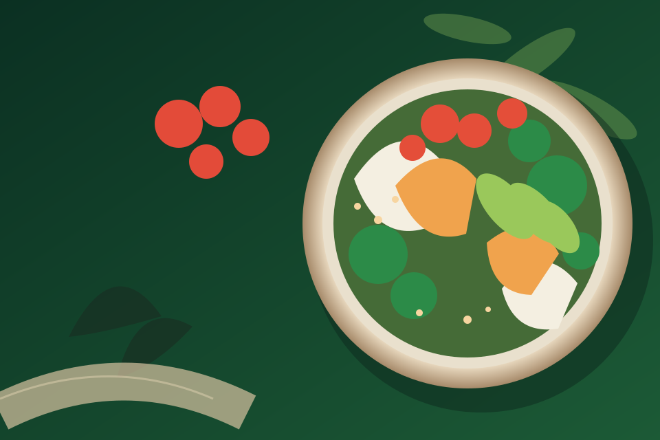

01. Poznaj punkt wyjścia
Zobacz, co utrudnia Ci regularne jedzenie — bez oceniania i listy zakazów.

Praktyczny przewodnik • PDF
Prosty system odżywiania, który pomaga ogarnąć codzienne posiłki, zakupy i nawyki — bez skrajnych diet i stania godzinami w kuchni.
Poznaj e-booka →Prosto, praktycznie, po ludzku
To nie jest dieta na 14 dni. To przewodnik, który porządkuje podstawy i pomaga wdrożyć małe zmiany w zwykłym tygodniu.
Zobacz, co utrudnia Ci regularne jedzenie — bez oceniania i listy zakazów.
Skorzystaj z modelu talerza, pomysłów na posiłki i sprytnego planowania zakupów.
Przez cztery tygodnie testuj nawyki i dopasowuj je do swojego życia.
Brzmi znajomo?
Czasem brakuje planu na długi dzień, pomysłu na szybki obiad albo sposobu na wieczorne zachcianki.
Co daje ten przewodnik?
Prosty model posiłku z warzywami, białkiem, węglowodanami i dodatkiem tłuszczu.
Lista bazowych produktów, reguła trzech zastosowań i metoda 2 + 2 + 2.
10 pomysłów na proste posiłki, które możesz modyfikować.
Przyjrzyj się przyczynom zachcianek dzięki protokołowi czterech pytań.
Dowiedz się, kiedy monitorowanie może być pomocne, a kiedy wybrać metodę bez liczenia.
Przygotuj się na weekendy, restauracje i trudniejsze tygodnie.
Zajrzyj do środka
19 stron materiału edukacyjnego prowadzi od obserwacji nawyków do wdrożenia prostego systemu.
Po lekturze możesz
Bez ważenia każdego składnika i skomplikowanych obliczeń.
Z listą zakupów i składnikami do kilku prostych dań.
Lepiej zrozumieć głód, zachcianki i wieczorne podjadanie.
Czy to dla Ciebie?
Poradnik jest materiałem edukacyjnym dla osób dorosłych. Nie jest indywidualną dietą ani leczeniem otyłości. Przy chorobach przewlekłych, ciąży, karmieniu, lekach wpływających na apetyt lub historii zaburzeń odżywiania zmiany skonsultuj ze specjalistą.
Jeden przewodnik. Praktyczne narzędzia.
Praktyczny przewodnik po redukcji, budowaniu sylwetki i codziennym jedzeniu — bez skrajnych diet i stania godzinami w kuchni.
Bezpłatnie dla każdego
Oblicz orientacyjne zapotrzebowanie, sprawdź wartości odżywcze produktów i zsumuj składniki swojego posiłku. Nie musisz zakładać konta.
01 • Kalkulator
Szacunek na podstawie wzoru Mifflina–St Jeora.
Wynik jest orientacyjnym oszacowaniem dla osób dorosłych, nie diagnozą ani indywidualnym zaleceniem. Rzeczywiste potrzeby mogą się różnić. Kalkulator nie jest przeznaczony dla osób niepełnoletnich, w ciąży lub karmiących ani do prowadzenia dietoterapii.
02 • Baza produktów
Wartości orientacyjne na 100 g części jadalnej. Wybierz produkt, aby przeliczyć porcję.
Zacznij wpisywać nazwę produktu.
Wybierz produkt z listy, aby zobaczyć wartości odżywcze.
Dodaj produkty, aby zsumować posiłek.
Baza zawiera przykładowe, uśrednione wartości dla wskazanych postaci produktów (np. ryż ugotowany, pierś kurczaka surowa). Marka, odmiana, obróbka i zawartość wody wpływają na wynik. Do precyzyjnego liczenia sprawdzaj etykietę konkretnego produktu.
Masz pytania?
Produkt jest e-bookiem PDF. Pełny plik PDF nie jest udostępniany publicznie. Zamówienie i dostarczenie produktu obsługuje platforma Naffy.
Po kliknięciu przycisku zakupu przejdziesz do strony zamówienia Naffy. Dostawa pliku odbywa się zgodnie z ustawieniami produktu na tej platformie.
Tak. PDF można otworzyć na telefonie, tablecie i komputerze w aplikacji obsługującej ten format.
Nie, wystarczy dowolna aplikacja do otwierania PDF.
Nie. W środku znajduje się elastyczny przykładowy jadłospis na 3 dni, a nie indywidualna dieta kaloryczna.